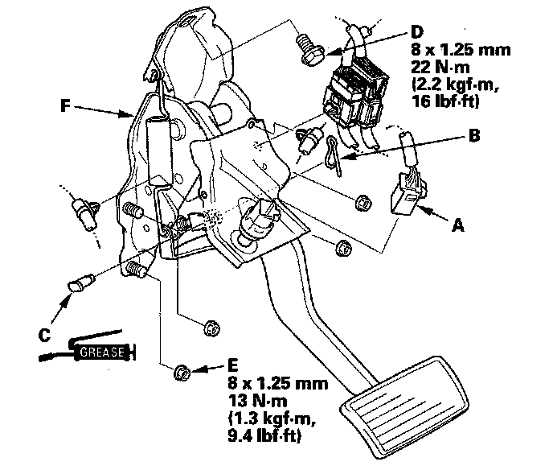

Brake Pedal Assy: Service and Repair
Brake Pedal Replacement1. Remove the driver's dashboard undercover.
2. Remove the TPMS control unit.
3. Disconnect the brake pedal position switch connector (A), and remove the harness clips.

4. Remove the lock pin (B) and joint pin (C).
5. Remove the harness and connector clips.
6. Remove the brake pedal bracket mounting bolt (D) and nuts
7. Remove the brake pedal with bracket (F).
8. Install in the reverse order of removal.
9. Do the brake pedal and brake pedal position switch adjustment.